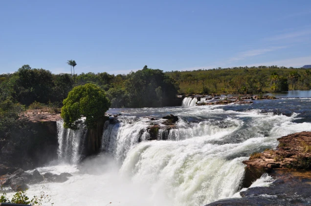
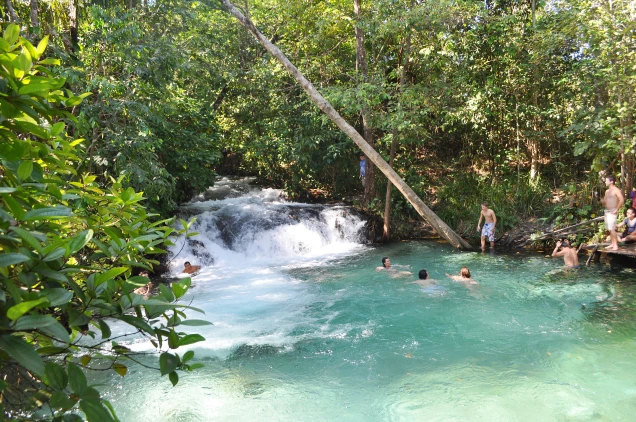
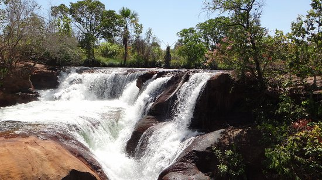
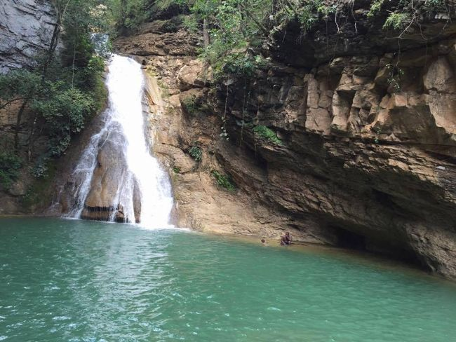
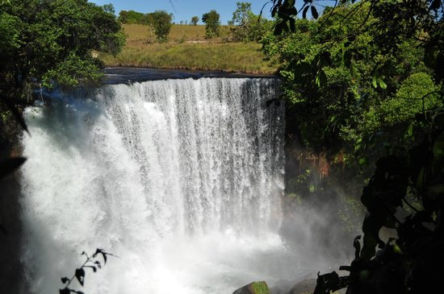
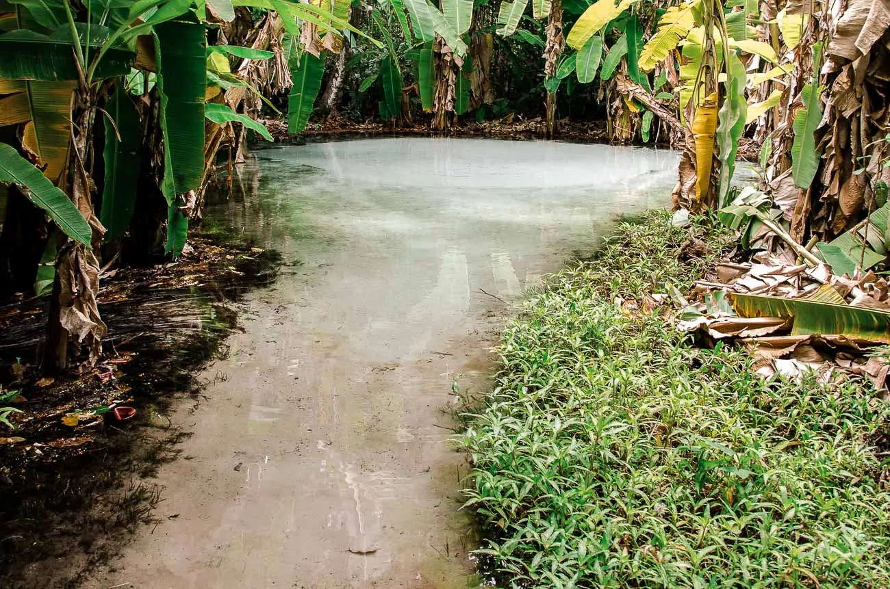
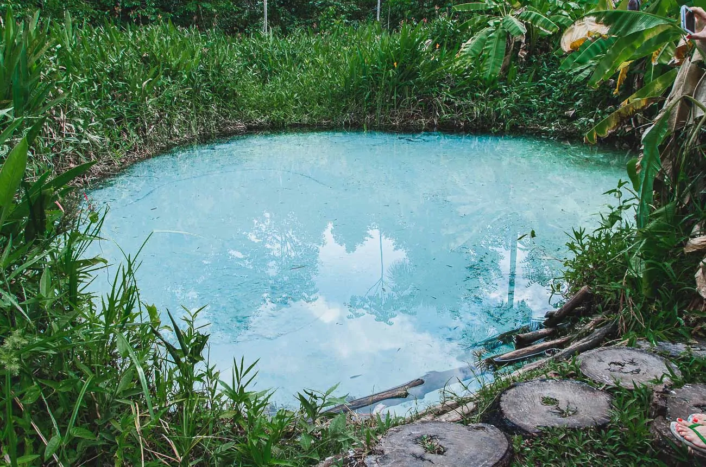
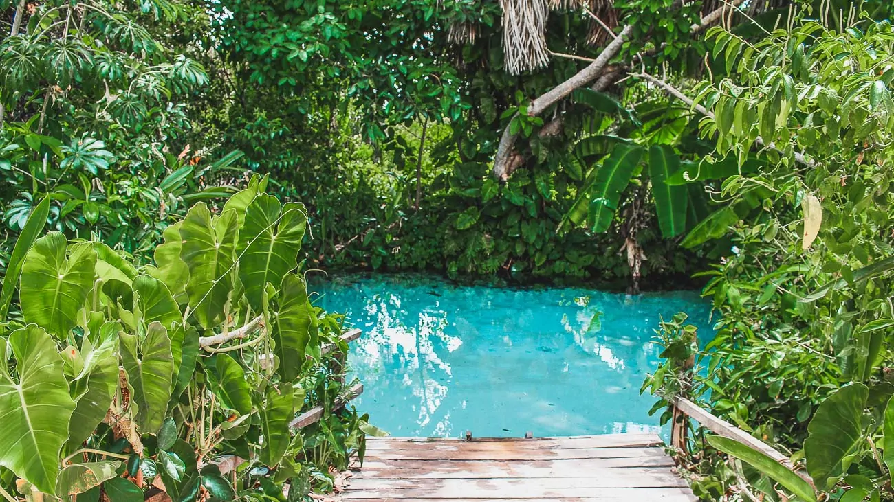
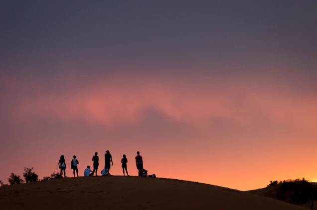
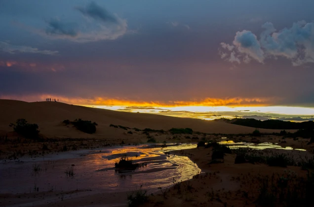

JALAPÃO
Cachoeiras, Mirantes e Ferverdouros
Cachoeira da Velha
Alimentada pelas águas do Rio Novo, a Cachoeira da Velha, localizada dentro do Parque Estadual do Jalapão,
é a maior da região – são duas quedas que completam, juntas,
cerca de 100 metros de largura e 15 de queda livre. Não é permitido tomar banho ali,
mas é possível fazer um rafting pela cachoeira ou unir a visita à Prainha do Rio Novo. Ela é tão surpreendente que é conhecida como a Mini Catarata do Iguaçu

Cachoeira do Formiga
A 36 km de Mateiros, é uma das mais bonitas da região. A queda não é muito grande, mas suas águas formam uma impressionante piscina natural azul-esverdeada.
Também é possível acampar na área.

Cachoeiras do Soninho
A 68 km da cidade a Cachoeiras do Soninho, nela, a queda principal, com 30 metros de altura, tem um grande volume de água que torna o nado impossível.
Mas, poucos metros acima, o Rio Sono forma pequenas quedas e piscinas naturais boas para banhos.

Cachoeira do Lajedo
A 36 km de Ponte Alta do Tocantins, por sua vez, o rio cai por degraus escorregadios antes de formar a queda e,
depois, um poço (para chegar até ele, é necessário descer pela própria cachoeira).

Cachoeira da Fumaça
A Cachoeira da Fumaça no Jalapão é mais uma cachoeira que está fora do circuito tradicional de visitação.
É uma grande queda d'água, forte e bela. Desaconselhada para banho e não está inserida em nenhum pacote turístico da região.
Nos foi explicado que as empresas não são autorizadas a levar turistas nesse ponto da região.
Devido a força da água o banho é desaconselhado, sendo um atrativo para ser admirado e fotografado

Ferverdouros
Programa único do Jalapão, os fervedouros são poços cristalinos de onde a água brota com tanta pressão que impede os banhistas de afundarem. Um dos mais famosos é o Fervedouro do Ceiça.
Fervedouro do Ceiça
Cercado por bananeiras que garantem um visual incrível, o Fervedouro do Ceiça foi o
primeiro a ser aberto para o público e carrega o título de um dos mais famosos e bonitos do Jalapão.
Em suas águas azuis cristalinas, ele ainda oferece um pequeno corredor de água que garante ótimas fotos.

Fervedouro dos Buritis
Repleto de bananeiras e de buritis – árvores que absorvem uma grande quantidade de água das profundezas dos fervedouros, e por isso a origem do nome – o Fervedouro dos Buritis é outro lugar imperdível no Jalapão.
Dependendo da luz do sol, as suas águas podem ter um incrível tom de azul ou verde, formando um cenário espetacular entre a vegetação ao seu redor.

Fervedouro Rio Sono
Com um lindo tom de azul em suas águas (perfeito para fotos embaixo d´págua e avistar alguns peixinhos),
o Fervedouro Rio Sono possui várias nascentes, umas mais fortes e outras mais fracas, e você pode escolher em quais delas flutuar.
A água desse fervedouro é um pouco mais gelada, mas nada que te impeça de tomar um banho relaxante.
O formato do Rio Sono é um pouco mais quadrado e há uma plataforma de madeira que ajuda o visitante a acessar a água sem ter que passar pela área de vegetação

Fervedouro Bela Vista
O maior de todos os fervedouros do Jalapão – são 15 metros de diâmetro, o Fervedouro Bela Vista é considerado também um dos mais bonitos da região.
E não é para menos: suas águas extremamente azuis e a vegetação ao seu redor garantem um visual de tirar o fôlego!
Suas águas cristalinas permitem que você veja até alguns peixinhos e tem uma temperatura super gostosa. O Fervedouro Bela Vista também é um dos mais profundos,
passando dos 70 metros.

Mirantes
A cerca de 30 km de Mateiros, a Serra do Espírito Santo oferece uma vista privilegiada da beleza e imensidão do Jalapão.
A trilha até o topo não é das mais fáceis – são cerca de 8 km de ida e volta (1 km de subida/descida até o primeiro mirante e outros 3 km na parte plana,
até o segundo mirante), mas o visual compensa. Os melhores horários para a fazer a trilha são no inicio da manhã e fim da tarde, quando é possível assistir o sol nascer ou se pôr do alto.

Ao lado, a erosão das rochas de arenito da Serra do Espírito Santo formam as dunas do Jalapão. Enormes bancos de areia alaranjada,
as dunas são ideais para assistir ao pôr do sol – a sensação é de estar em um deserto.

Veja o pôr do sol também através dos grandes buracos esculpidos nos blocos de arenito da Pedra Furada, a 30 km de Ponte Alta do Tocantins.

Outros passeios
Para completar sua visita ao Jalapão, vale conhecer ainda o Cânion Sussuapara, uma fenda de 12 metros de altura aberta pela água,
a cerca de 12 km de Ponte Alta, com muitas plantas, um córrego e uma pequena cascata. Para quem quer conhecer e comprar peças de artesanato
em capim dourado, vale visitar a omunidade quilombola Mumbuca, próxima a Mateiros.